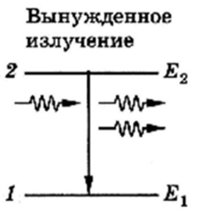
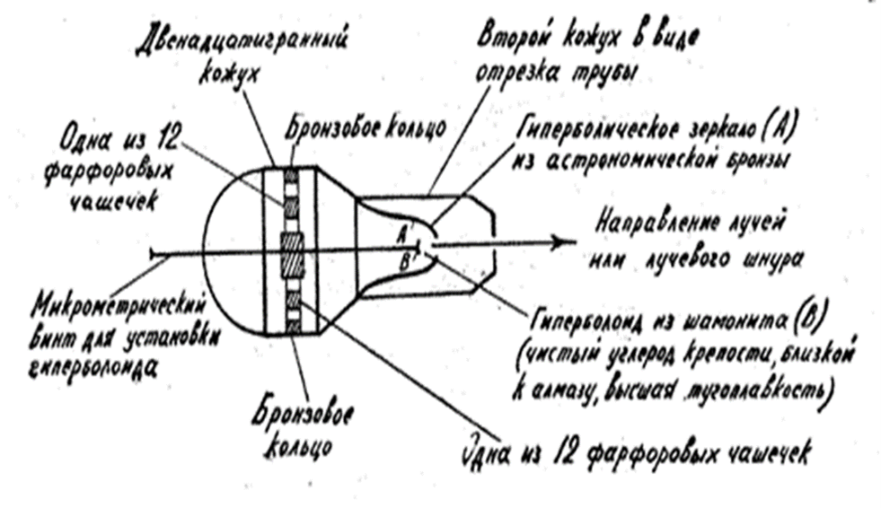
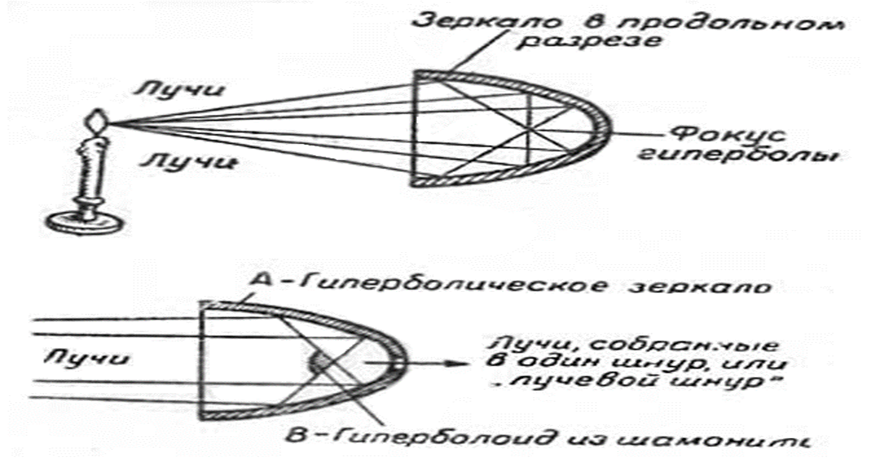

Лазеры (лазерный луч), являвшиеся ранее только предметом вымысла в литературных произведениях, теперь являются реальностью современного мира и находят свое применение в различных сферах жизнедеятельности человека от косметологии до технологий, используемых при освоении космоса.
Принято считать, что одним из первых произведений в котором был описано воздействие лазерного луча на окружающие предметы является научно-фантастический роман Герберта Уэллса (1866-1946 г.г.) «Война Миров», написанный в 1897 г. В романе главный герой сталкивается с вторжением на Землю агрессивных марсиан, использующих оружие, испускающее лучи, разрушающие все вокруг. Автор называет их «тепловыми лучами», и описывает как мощный инструмент, способный разрушать и таять все, что находится на его пути.
Роман Уэллса содержит только обобщенное описание оружия марсиан и силы его разрушительного воздействия на окружающий мир: «До сих пор еще не объяснено, каким образом марсиане могут умерщвлять людей так быстро и так бесшумно. Многие предполагают, что они как-то концентрируют интенсивную теплоту в абсолютно не проводящей тепло камере. Эту конденсированную теплоту они бросают параллельными лучами на тот предмет, который они избрали целью, при посредстве полированного параболического зеркала из неизвестного вещества, подобно тому, как параболическое зеркало маяка отбрасывает снопы света. Но никто не сумел убедительно это доказать. Несомненно одно: здесь действуют тепловые лучи. Тепловые невидимые лучи вместо видимого света. Все, что только может гореть, превращается в языки пламени при их прикосновении; свинец растекается, как жидкость; железо размягчается; стекло трескается и плавится, а когда они падают на воду, она мгновенно превращается в пар.»
Такое описание «тепловых лучей» и силы их воздействия на окружающие предметы было сделано автором за 20 лет до появления предложенной основателем современной физики Альбертом Эйнштейном (1879–1955 г.г). научной концепции «вынужденного излучения», которая позволила ученым в дальнейшем изобрести приборы с лазерным излучением.
В опубликованной в 1905 году работе А. Эйнштейна, касающееся структуры возникновении и преобразования света, рассматривалась возможность существования квантов света – фотонов. До этого момента в научной среде существовала теория о волновой природе света, было принято считать, что свет состоит из электромагнитных волн. Эйнштейн, доказал, что структура света состоит не только из электромагнитных волн, но и из частиц. Ученый установил, что энергия световых волн распространяется не как волна, а как частица (Эйнштейн назвал ее «квантом энергии»), которая имеет энергию обратно пропорциональную длине волны света. «Число квантов пропорционально интенсивности света. Чем интенсивней волна, тем больше квантов она содержит. Когда квант света сталкивается с электроном в металле, он сообщает этому электрону всю свою энергию и исчезает. Электрон тратит часть этой энергии на то, чтобы покинуть металл, а остаток идет на кинетическую энергию». Открытое Эйнштейном явление впоследствии получило название «фотоэлектрический эффект» - взаимодействие света с веществом, при котором энергия световых частиц (фотонов) передаётся электронам вещества.
В том же 1905 г. А. Эйнштейн опубликовал свои исследования природы Броуновского движения: объяснил механику хаотичного движения молекул и установил связь с температурой, динамической вязкостью и другими величинами. До этого ученые в рамках молекулярно-кинетической теории (МКТ) не понимали природу этого явления.
В 1915-1916 годах А. Эйнштейн доказал общую теорию относительности, доказав, что вблизи массивных тел искривляется пространство, а тела не притягиваются к более массивным телам, а падают на них: «если вы держите в руках лист бумаги и положили на него тяжелый шарик: поверхность листа изогнется. Если теперь положить на тот же лист другой шарик, то он будет стремиться скатиться к центру искривления»
В 1916 году А.Эйнштейн выдвинул гипотезу, что существует так называемое «вынужденное излучение», его сейчас ещё называют – индуцированным. Суть которого состоит в том, что под действием электромагнитного поля частица (молекула, атом, ядро и т.д.) может перейти с более высокого энергетического уровня на более низкий при этом происходит излучение фотонов света. Например, атом, состоит из ядра и электронов, которые вращаются вокруг него, как спутники вокруг планет. Если направить на атом какое-то электромагнитное излучение (например, луч света), то он перейдёт в возбуждённое состояние и электрон с одной орбиты вращения перескочит на другую, при этом энергия внутри всей системы изменится, а излишне полученная энергия излучается наружу тоже в виде светового луча.
Вот так упрощённо выглядит принцип вынужденного излучения, где Е – уровни энергии, при Е1 — в нормальном состоянии, при Е2 — в возбуждённом состоянии
Это открытие А. Эйнштейна нашло научное применение только через 30 лет, а в настоящее время считается основополагающей теоретической работой по квантовой электронике. За свои открытия в 1921 году А. Эйнштейн получил Нобелевскую премию. Все эти гипотезы А. Эйнштейна, после их подтверждения опытным путем, легли в основу разработки учеными лазерного излучения.
Гипотеза (научное предположение, не имеющее доказательств) становится теорией (научно доказанное предположение, имеющее теоретические и экспериментальные подтверждения) когда она неопровержимо доказана. Доказанная гипотеза либо опровергает старую теорию, занимая её место, либо становится самостоятельной теорией и или частью другой, более крупной теории.
Учеными физиками проводилось множество различных опытов в доказательство или опровержение теорий А. Эйнштейна. Так, например, физик Артур Комптон (1892—1962 г.г.) в 1922 г. доказал, что рентгеновские лучи рассеиваются свободными электронами так, как если бы они были частицами с энергией и с импульсом, а в 1923 году американский физик Роберт Эндрю Милликен (1868–1953 г.г.) получил Нобелевскую премию за серию опытов, позволивших ему измерить заряд электрона. Подтверждение гипотезы А. Эйнштейна о существовании вынужденного излучения было получено в 1928 году немецкими физиками Р. Ладенбургом (1882–1952 г.г.) и Г. Копферманом (1895-1963 г.г.) в процессе изучения структуры электрически возбужденных газов.
На момент публикации в 1927 произведения А. Толстого гипотеза А. Эйнштейна о «вынужденном излучении» (излишне полученная телом из вне энергии не только поглощается телом, но и преобразуется им, а ее избыток излучается наружу в виде светового луча) была только гипотезой и не имела своего опытного подтверждения и тем более практического применения.
Вдохновленный идеей о разрушающем оружии в романе Уэллса «Война миров» и научными открытиями в области физики российский писатель Алексей Толстой (1883-1945 г.г.) в своем художественном произведении «Гиперболоид инженера Гарина» (1927 г.) описал устройство, передающее разрушающую энергию на большие расстояния, получившее в романе название - «Гиперболоид». По замыслу автора придумал мощное оружие ученый-химик Николай Манцев и сконструировал инженер Гарин. Собирая огромную световую энергию, гиперболоид излучал тончайший тепловой луч, способный разрезать или расплавить все что угодно, даже горные породы, проникая в недра земли, до которых не мог добраться человек. Герой романа находит применение своему изобретению и в военной области, и в промышленности, и в добыче полезных ископаемых.
В отличие от Г. Уэллса, А. Толстой не только описал разрушительную силу загадочного оружия, но и подробно описал принцип его действия и устройства.
Устройство гиперболоида. (Рисунок А. Н. Толстого к роману).
Принцип действия гиперболоида (Рисунок А. Н. Толстого к роману).
«- Это просто, как дважды два. Чистая случайность, что этого до сих пор не было построено. Весь секрет в гиперболическом зеркале (А), напоминающем формой зеркало обыкновенного прожектора, и в кусочке шамонита (В), обделанном также в виде гиперболической сферы, … лучи света, падая на поверхность зеркал, сходятся в одной точке, фокусе гиперболы… я помещаю в фокусе гиперболического зеркала гиперболу (очерченную, так сказать, на выворот) — гиперболоид вращения, выточенный из тугоплавкого, идеально полирующегося минерала шамонита (В), ... Что же получается с лучами: лучи, собираясь в фокус зеркала (А), падают на поверхность гиперболоида (В) и отражаются от него математически параллельно, — иными словами, гиперболоид (В) концентрирует все лучи в один луч, или в «лучевой шнур», любой толщины. Переставляя микрометрическим винтом гиперболоид (В), я по желанию увеличиваю или уменьшаю толщину «лучевого шнура». Потеря его энергии при прохождении через воздух ничтожна. При этом я могу довести его до толщины иглы.»
В основе принципа действия гиперболоида лежит, открытый древнегреческим ученым Евклидом, закон отражения света (направление хода светового луча изменяется в результате встречи с отражающей (зеркальной) поверхностью. Лучи — падающий и отражённый лежат в одной плоскости, при этом угол отражения луча равен углу его падения).
Принцип работы гиперболоида отличается от принципа устройства и действия лазерного луча, однако, принято считать, что именно гиперболоид, описанный А. Толстым в художественном произведении, является прототипом лазерного оружия.
Отличие работы вымышленного А. Толстым гиперболоида и изобретенного учеными физиками лазерного луча состоит в самом принципе формирования луча. В художественном произведении схема излучения гиперболоида построена на механической оптике, с использованием зеркал и линз: свет от внешних (химических) источников фокусируется парой зеркал и усиленный отражается во вне. Принцип же работы лазеров построен на выдвинутой А. Эйнштейном гипотезе «вынужденного (индуцированного) излучения» - при усиленном внешнем воздействии на тело лучом света происходит поглощение и преобразование энергии, при этом излишне полученная энергия излучается наружу в виде такого же светового луча.
Практическое применение теории «вынужденного излучения» - создание прибора, происходит только в 1951 году. Советские физики Н.Г. Басов (1922-2001г.г.), А.М. Прохоров (1916-2002г.г.) обнаружили и доказали, что неоднородное магнитное поле усиливает излучение, а серия проведенных ими опытов подтвердила увеличение количества атомов в таком излучении.
Н.Г. Басов, А.М. Прохоров и американский физик Ч. Таунс (1915-2015 г.г.), занимаясь одним и тем же исследованием параллельно, не имея возможности общаться и обмениваться своими научными достижениями, сформулировали основные принципы квантового усиления и сконструировали первый квантовый генератор, излучающий радиоволны длиной около сантиметра, который получил название «Мазер» от английского - «Microwave Amplification by Stimulated Emission of Radiation» - «усиление микроволн с помощью вынужденного излучения».
В основу работы Мазера было положено усиленное воздействие микроволнами на молекулы аммиака, в результате которого возбужденные молекулы аммиака, проходя через резонатор, отдавали во вне микроволновое излучение определенной частоты.
Мазер в настоящее время используется для работы атомных часов и всех современных систем точного времени (в навигации, спутниковой связи, ракетостроении, контроле ядерного синтеза в реакторах). В современных мазерах вместо аммиака применяется водород. Водородные мазеры считаются одними из самых точных в мире. Именно благодаря мазерам российская система стандартов входит в мировую пятерку по точности.
Первый квантовый генератор света, излучающий электромагнитные волны видимого света (световую волну), был создан в 1960г. Т. Мейманом (1927-2007 г.г.) и получил название «Лазер» от английской аббревиатуры «Light Amplification by Stimulated Emission of Radiation» («усиление света посредством индуцированного излучения»).
Принцип действия генератора был основан на изобретенном А. Кастлером (1902-1984 г.г.) методе «оптической накачки» (пучок света соответствующей частоты воздействуя на атомы или молекулы кристаллов поднимает их до более высокого энергетического уровня), за открытие которого ему в 1966 г. была присуждена Нобелевская премия.
Принцип устройства первого генератора был похож на устройство Мазера:
- источник усиленного внешнего воздействия
- предмет воздействия
- резонатор, на выходе из которого образуется новое усиленное излучение
Если в Мазере источником усиленного внешнего воздействия являлись микроволны, а предметом, на который осуществлялось воздействие – аммиак, то в первом квантовом генераторе - усиленное внешнее воздействие осуществлялось мощной световой лампой, а предметом воздействия стал твердый кристаллический камень - рубин. Эксперименты показали, что при мощном световом излучении кристаллы рубина не только остаются твёрдыми и устойчивыми к высоким температурам, но, сохраняя свое возбужденное состояние, излучают волну длиной 694,3 нм, сохраняя при этом ее стабильность. В качестве резонатора были использованы две частично посеребрённые стеклянные пластины, расположенные на небольшом расстоянии друг от друга.
Принцип действия лазера:
- Есть активное вещество — кристаллическое (рубин, гранат, стекло и тому подобное).
- Кристалл в виде цилиндра помещают между двух параллельных зеркал — резонаторов
- На кристалл светит импульсная лампа, которая «накачивает» вещество. Энергетические центры переходят в состояние возбуждения и излучают фотоны.
- Фотоны отражаются от одного зеркала к другому, продолжая «создавать» дополнительные фотоны из переходящих в возбуждённое состояние атомов. В результате создается направленное когерентное излучение с постоянной длинной волны, которая зависит от материала.
Работы Н. Г. Басова, А. М. Прохорова и Ч. Таунса, опубликованные в 1954 году в которых были сформулированы фундаментальные принципы генерации электромагнитного излучения за счёт вынужденного излучения заложили основу развития такого раздела физики, как Квантовая электроника, «изучающая методы усиления, генерации и преобразования электромагнитных волн, основанные на эффекте вынужденного излучения, а так же принципы взаимодействия электромагнитного излучения с веществом и использования полученной обратной связи»
На базе квантовой электроники возникла Лазерная физика – «раздел физики, в котором изучаются процессы преобразования различных видов энергии в когерентное излучение лазеров, методы управления этим излучением, процессы взаимодействия лазерного излучения с веществом, основы применения лазеров в различных областях науки, техники и медицины».
Ценность и практическую пользу лазеров используют сегодня во многих отраслях науки, промышленности и бытовой жизнедеятельности человека. Лазер применяется практически повсюду: сканеры штрих-кодов в магазинах; CD, DVD диски, лазерные дальномеры, лазерные принтеры; голографические изображения и так далее. В промышленности существуют станки, машины и оборудование посредством которых осуществляется лазерная резка и лазерная сварка практически любых материалов, лазерная гравировка и маркировка изображений. В медицине лазеры заменяют скальпель хирурга, используются в офтальмологии и косметологии, стоматологии, онкологии, кардиологии. Лазеры используются в связи, как альтернатива кабелям или радиоканалу - в России это называются АОЛС — атмосферная оптическая линия связи. В космосе лазерный луч —альтернатива радиоканалу, примером такой связи стала автоматическая межпланетная станция MESSENGER, передавшая лазерный сигнал на Землю на расстояния 24 млн км.
С помощью лазерного луча производятся измерения расстояния не только на земле, но и в космосе. Например, во время полётов на Луну, на её поверхности установили несколько специальных уголковых отражателей. С Земли посылали лазерный луч и измеряли время, которое он затрачивает на путь до лунной поверхности и обратно. Зная скорость света, можно рассчитать расстояние до Луны. Сегодня параметры орбиты Луны известны с точностью до нескольких сантиметров.
Таким образом, изложенная когда-то в литературном произведении идея использования человеком устройства, излучающего огромную световую энергию, способную разрезать, расплавлять или разрушать все что угодно нашла свое практическое воплощение и стала доступна во многих областях современной жизни.